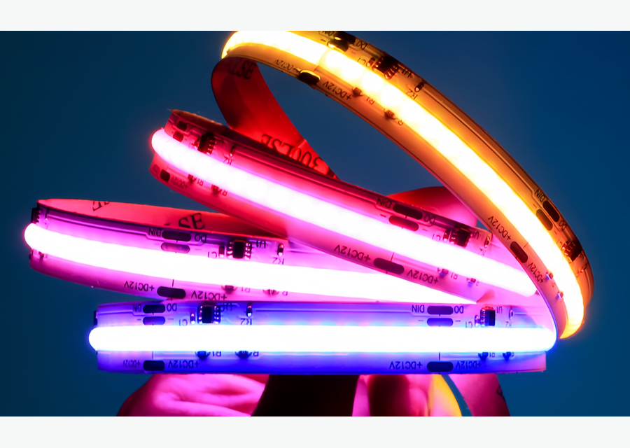
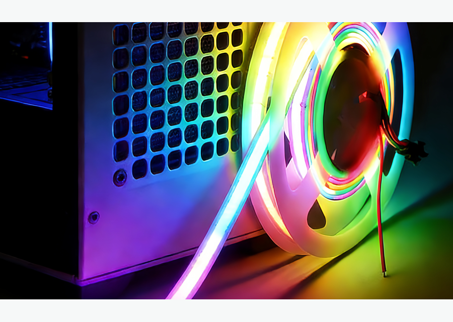

COB RGB para quarto
Luz colorida contínua para cabeceira, prateleiras e cenas decorativas.
RGBquartocontrole
Ver detalhes

Produto COB • RGB
Fita LED COB RGB para projetos que precisam de cor, cenas e efeito contínuo com menos pontos aparentes. Indicada para decoração, quartos, lojas, vitrines, painéis, bares e ambientes comerciais que usam luz como parte da experiência.
Keyword map
Principal: fita led cob rgb. Secundárias: fita de led cob rgb, fita led rgb cob, fita cob rgb 24v, fita led colorida sem pontos. Esta página segue a lógica do mapa: uma URL canônica por cluster, sem separar variações que não tenham intenção própria.
Modelos COB
Estrutura de categoria inspirada em sites líderes: navegação clara, cards por variação, guia técnico, aplicações e FAQ, com texto original em português do Brasil.
Luz colorida contínua para cabeceira, prateleiras e cenas decorativas.

Efeito colorido para vitrines, comunicação visual e ambientação comercial.

Linha de cor para painéis, nichos, móveis e projetos de entretenimento.
Guia técnico
A fita LED COB RGB deve ser escolhida quando a cor faz parte do projeto. Ela funciona melhor em aplicações decorativas e comerciais do que como luz principal de tarefa. Para controlar cores e efeitos, planeje controlador compatível, fonte 24V, comprimento por zona e pontos de alimentação. Em lojas e vitrines, use cenas com moderação para não distorcer a percepção do produto.
Aplicações
Aplicações alinhadas aos clusters do mapa: sanca/gesso, cozinha/armário, loja/vitrine, quarto e ambientes comerciais.
Linhas coloridas em prateleiras, cabeceira e painéis.
Planejar aplicaçãoCenas de cor para campanha, destaque e atmosfera.
Planejar aplicaçãoLuz dinâmica para criar experiência visual.
Planejar aplicaçãoFAQ técnico
Respostas curtas para intenção comercial e dúvidas de especificação antes do orçamento.
Sim. O controlador é necessário para trocar cores, efeitos e intensidade.
Ela cria efeito colorido, mas para tarefa e leitura de produto a fita branca costuma ser melhor.
Sim, desde que a largura seja compatível e o difusor não prejudique o efeito desejado.
Depende do modelo. Para projetos longos, 24V costuma facilitar o planejamento de queda de tensão.
Cotação B2B
Envie metragem, tensão, temperatura de cor, ambiente, perfil desejado e prazo. A resposta deve indicar fita, fonte, perfil, conector e controle compatíveis.